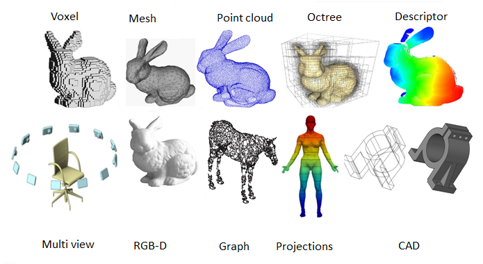

Exercise4: 3D Visualization and 3D Animation#
Warm Up#
Common Types of 3D Data#
3D data can appear in many formats and domains:
Point clouds 🟢 (from LiDAR, photogrammetry, laser scanning)
Meshes 🕸️ (triangular or polygonal surfaces from 3D modeling)
Voxel data 🧊 (3D pixels, often used in medical imaging or volumetric models)
3D building models 🏢 (e.g., CityGML, BIM data, CAD models)
DEM/DSM (Digital Elevation/Surface Models, raster grids with height values) 
2.5D(Pseudo 3D) vs. 3D Data#
Aspect |
2.5D (Pseudo-3D) |
True 3D |
|---|---|---|
Geometry |
One z-value per (x, y) |
Multiple z-values per (x, y) possible |
Representation |
Raster grid (DEM/DSM), extruded polygons |
Point clouds, meshes, voxels, solids |
Complexity |
Relatively simple |
More complex data structures |
Storage & Processing |
Lightweight, fast |
Heavy, requires advanced computation |
Can model overlaps? |
❌ No |
✅ Yes (bridges, tunnels, multi-floors) |
Main Use Cases |
Terrain, surface analysis, quick 3D view |
Urban modeling, subsurface, indoor 3D |
2.5D is enough when you only care about terrain or building heights.
True 3D is necessary when you need full volumetric analysis or overlapping structures.
In geodesy, we often start with 2.5D (e.g., DEMs) but increasingly move to full 3D for city models, infrastructure, and digital twins.
2.5D is also common in video games and VR.
How Do We Get 3D Data?#
This is a huge topic that connects to many industries: Robotics, Autonomous Driving (AD), Gaming, Digital Design, Architecture, Geodesy, and more.
Broadly speaking, there are two ways: direct measurement (sensors record 3D geometry in real-world coordinates) and indirect reconstruction (3D is inferred from 2D observations or designed manually).
LiDAR Scanning (Airborne, Terrestrial, Mobile)#
Captures dense point clouds with XYZ coordinates and intensity values.
Can be mounted on drones, aircraft, cars, or tripods.
Geodetic Surveying#
GNSS / GPS surveying: directly measures 3D positions in global coordinates (WGS84, UTM, etc.).
Total station or laser theodolite: high-precision ground-based measurement for engineering, construction, and geodesy.
Photogrammetry (Multi-View Geometry)#
Derives 3D geometry from overlapping images(aerial, drone, or satellite).
Large-scale projects: SRTM generated near-global elevation models.
3D Computer Vision#
Structure from Motion (SfM): reconstructs camera positions + sparse point clouds from unordered photos, (COLMAP).
Multi-View Stereo(MVS): refines dense surface geometry given camera parameters, e.g. MVSNet
Deep learning approaches:
VGGT (Vision Geometry Grounded Transformers): learns 3D scene geometry from multi-views.
Neural rendering methods:
NeRF (Neural Radiance Fields) – photorealistic novel views.
3D Gaussian Splatting – real-time 3D rendering.
Artificial Creation#
Models created by artists or engineers in CAD, BIM, or 3D modeling tools (SketchUp, Blender, 3ds Max).
Common in gaming, movies, architectural visualization, digital twins.
With or Without World Coordinates?
Direct methods (LiDAR, GNSS, total station) → usually already georeferenced, so they can be integrated into GIS immediately.
Indirect methods (SfM, photogrammetry without GCPs, manual design) → typically start in relative coordinates only.
If no information about scale or world coordinates is available, the dataset cannot be directly placed in a real-world CRS. This is why we require Ground Control Points (GCPs) or another external reference source (e.g., GNSS measurements) to restore accurate georeferencing.
Task#
In this exercise, you’ll move from 2D mapping to 3D visualization in ArcGIS Pro. You will set up and display spatial information in three dimensions, create realistic 3D symbols for buildings, street furniture, and monuments, capture GNSS points, and finish by producing a 3D animation and exporting it as a video.
Overview#
Prepare building layer and extrude into 3D
assign heights and visualize buildings in three dimensions.
Create and manage a Local Scene
set up a 3D workspace using a local UTM projection for accurate measurements.
Digitize and symbolize new 3D point features
add trees, streetlights, benches, and landmarks from imagery.
Classify and orient features
use attributes to control rotation, style, and size of symbols.
Import and position custom 3D models
replace simple shapes with detailed building/monument models.
Capture GNSS points and visualize in 3D
import GPS measurements and align them with the scene.
Create a fly-through animation
set camera paths, transparency changes, and annotations.
Export animation to video
produce a shareable MP4 file and submit.
Descriptions & Steps#
Detailed instructions in Lesson 4
Data#
Data Students.gdb(buildings, roads)Park-cadastral.tifTUM.daeOld_Pinakothek.daeMonuments.gpxTrack.gpx
1. Preparing and Extruding Buildings#
Select buildings with
level_num= 0 or NULL and assign default value 3.Create a Local Scene and add
BuildingsandRoads.Extrude buildings by
$feature.level_num * 4(meters per floor).
3. Digitizing New 3D Features#
Create point feature classes for trees, streetlights, benches, and landmarks with Z-values enabled.
Digitize features from cadastral plan and aerial imagery.
Place anchor points for TUM and Old Pinakothek.
4. 3D Symbolization#
Apply built-in 3D marker symbols to point layers.
Classify park benches by
Orientattribute and adjust rotation.Replace extruded landmark buildings with custom 3D models and position them correctly.
5. Capturing & Displaying GNSS Points#
Use GPS device to record monument locations (20 averaged points each).
Convert GPX files to shapefiles using GPS Utility.
Define projection as WGS 1984 and symbolize monuments with custom 3D models.
6. Creating a 3D Animation#
Plan keyframes for viewpoints and transitions.
Adjust transparency, add titles, and set duration.
Export animation as MP4 (YouTube preset) and submit.
Optional Task#
Write a script
Update building heights from a CSV file and re-extrude buildings.
Automate GPX-to-shapefile conversion (e.g., using
ogr2ogrorgeopandas).
Build your own 3D scene on the web using Cesium
Start with example datasets or use the building/monument data from this exercise.